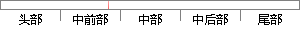

然后创建了一个model。
片段位置图

相似结果|
相似片段 1： model 都创建了一张数据表。所以 SQLite3 里创建表都以 model 文件进行，一个 model 就是一个表。在 WAF 系统开发的过程中，建表的方式也是通过model 文件进行的。3.6
相似片段 2：首先创建一个新的EMF项目，选择LoadfromanXMLSchema，然后单击next，在文件系统中找到XSD文档并加载，然后Generator中的模型名会自动填充。，这样就创建了cpXML模型
相似片段 3：，如下图5．6所示，在右下角Generaters一栏选中键入model、USer，然后点击go，就会在appkmodels下生成一个名为USer．rb的文件，其代码如图5．6编辑区所示。图5．6创建
相似片段 4： model 模型，使用该 model 模型即可进行对数据的 CRUD 操作。当对一条新的数据进行保存时，需要使用 model 创建一个 entity 实例，然后使用该实例的 save()方法对数据进行保存
相似片段 5：自动创建了几个数据库，以便于DBMS的管理和操作。用户可以根据实际应用的需要，将不同的数据分门别类，在SybaseSQLServer中创建子集的一个或几个数据库。SybaseSQLServer自动创建
相似片段 6：管理UML顺序图如上图5．12所示，当警务人员创建一个新用户信息的时候，系统首先是通过web页面上传HTlP请求，当后台的业务逻辑获取该请求后调用UsrAction来进行处理，该Action创建了一个新
相似片段 7：生成一个实体类Userlnfo。代码如图12．3数据访问层刨建DAL类库，引用Model类库，在类库中创建访问用户信息类UserDAO，代码如图2。2．4业务逻辑层创建类库BLL，引用Model类库和
相似片段 8：面板图6-32 .gmfgen文件及生成的图形编辑器代码8）代码修改由于我们的编辑器需要定制实体Entity节点的图形，所以要在系统生成的代码中做一些改动，这里我们新建了一个包如图6-33所示，然后
相似片段 9：对象：类、属性、实例(个体)。使用Jena处理本体要先建立一个OntoModel对象，然后才能通过本OntoModel所定义的方法操作模型。ModelFactory是Jena提供的用来创建各种模型的类
相似片段 10：的基本原理及创建过程1．传统的企业服务总线的创建过程如下：(1)创建一个服务总线的名称，然后将应用服务器作为总线成员加入到服务总线中来，接着创建端点监听器来接受外部的服务请求。
|
※ 片段修改建议 ※
近似词参考：- 创建：建立 创立
系统自动生成语句：然后建立了一个model。
注：本片段修改建议为系统自动生成，仅供参考。